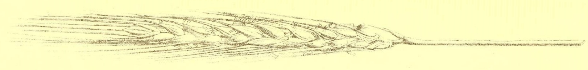

My pseudonym is a tribute to Ann Leckie's ill-fated hero in her novel Ancillary Justice. Awn always tries to do the right thing for others and she pays for it with her life. I hope that I will act like Awn yet suffer a less tragic fate.
The opportunity for awn iconography was irresistible. I have
always admired old botanical drawings and thought that awns would
make for excellent section dividers.
Also, this is my little test of the dead internet theory. Can anyone even find plain text prose anymore and will someone appreciate this in 2026?
So, step under the awning. Shelter yourself from the rain. Take a
moment to hear what I have to say.
|
स्वामी ठाकुर तुम मेरे अपने हाथ उठाओ अपने शरण लगाओ द्वार पड़ा तेरे |
וְהוּא אֵלִי וְחַי גּוֹאֲלִי וְצוּר חֶבְלִי בְּעֵת צָרָה וְהוּא נִסִּי וּמָנוֹס לִי מְנָת כּוֹסִי בְּיוֹם אֶקְרָא |